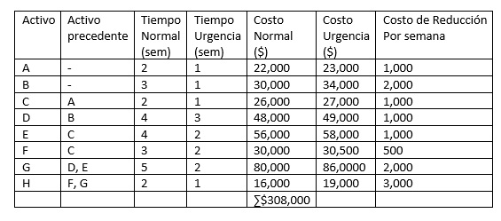
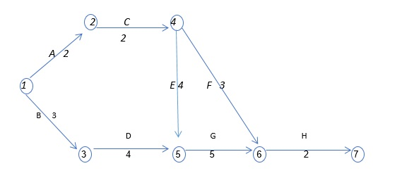
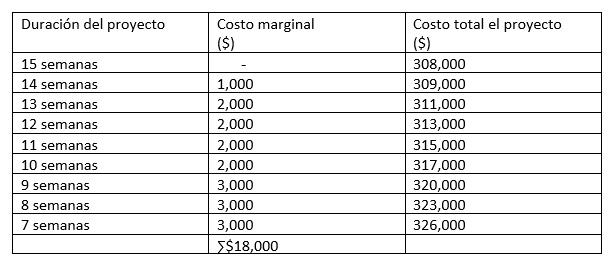
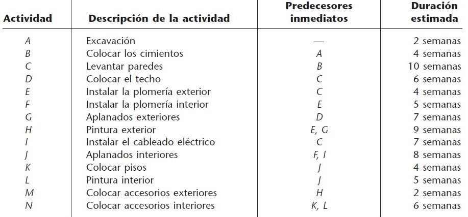
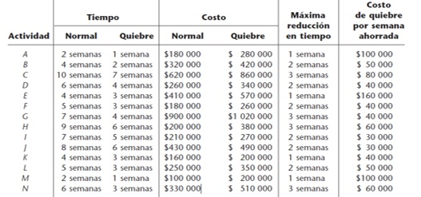
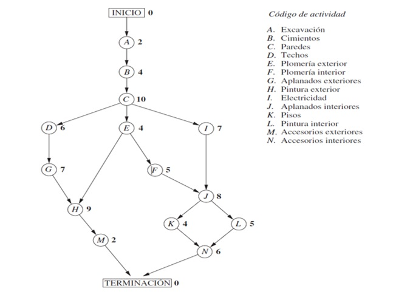

PERT/costo le permite a un administrador planear, programar, supervisar y controlar tanto tiempos como costos.
Ejercicio:

Elaboración propia
1.- ¿Cuál es la red de actividades para este proyecto?
2.- Identificar la ruta y el tiempo del camino crítico.
3.- ¿Cuál es el costo marginal por concluir el proyecto en 13 semanas?
4.- La gerencia de la empresa desea terminar en el menor tiempo el proyecto, ¿Cuál es el menor tiempo para concluir el proyecto?, ¿Cuál es en dicha circunstancia, el costo total? [6].

Elaboración propia
Ruta crítica:
A- C- E- G- H
2+2+4+5+2 =15 semanas
Costo marginal por concluir el proyecto en 13 semanas: $3,000

Elaboración propia
La compañía RELIABLE CONSTRUCTION acaba de ganar una licitación de 5.4 millones de dólares para construir una nueva planta para un fabricante importante. El dueño de la empresa necesita que la planta esté en operación en 40 semanas.
Reliable ha asignado este proyecto a su mejor director de construcción, David Perty, para asegurar que se complete a tiempo. El señor Perty debe hacer los arreglos para que cierto número de brigadas realicen las distintas actividades de construcción en diferentes tiempos.

Elaboración propia
En la siguiente tabla se presentan los tiempos normales y tiempos urgentes, así como los costos normales y los costos urgentes:

Elaboración propia
La red con las relaciones de precedencia quedan de la siguiente manera:

Elaboración propia
Así, en el caso del proyecto de Reliable Construction Co., se tiene:
Ruta crítica: A→B→C→E→F→J→L→N
Duración (estimada) del proyecto = 44 semanas.
Por tanto, si no ocurren retrasos, el tiempo total que se requiere para terminar el proyecto debe ser de 44 semanas.
Ahora, el señor Perty debe determinar de manera específica cuáles actividades deben reducir sus duraciones, y en qué medida, con el propósito de cumplir con el límite de 40 semanas en la forma menos cara.
Una técnica para resolver este problema es el análisis de costo marginal lo que da un total de 140 000 dólares [7].